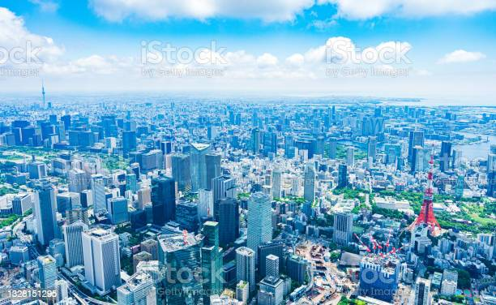
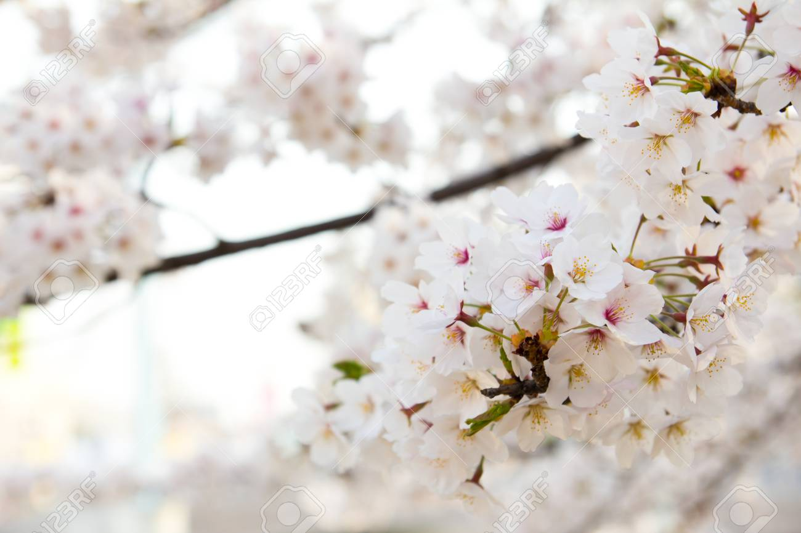
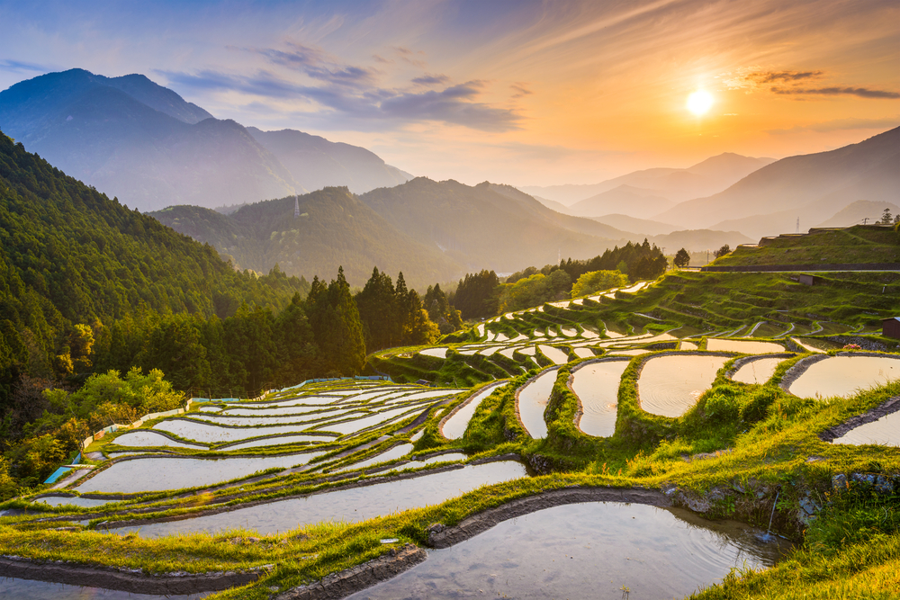
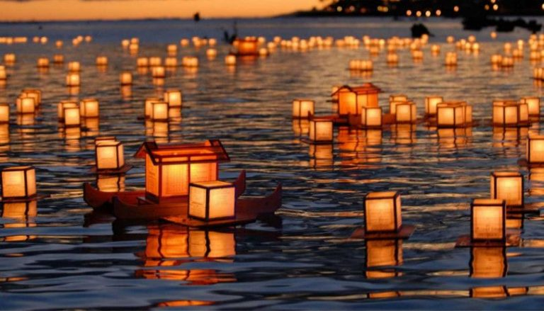
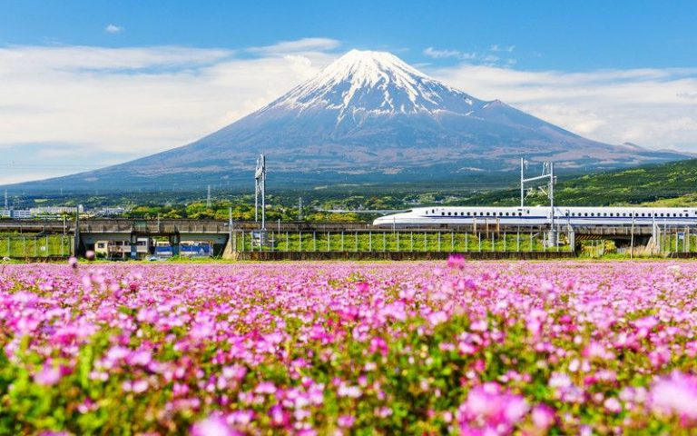
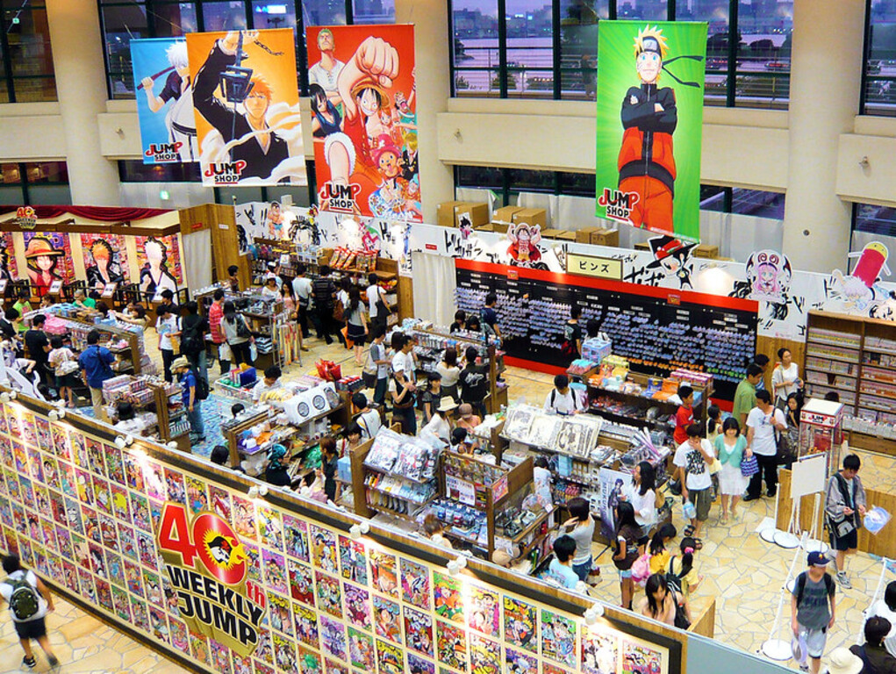

La capitale du Japon est la ville la plus peuplée au monde. Tokyo est immense et offre de nombreuses possibilités de découvertes que ce soit gustatives, culturelles ou historiques. Ses 23 arrondissements sont arrivés à garder un esprit villageois au sein de cette mégalopole gigantesque. A n'importe quelle heure du jour et de la nuit, vous vous sentirez en sécurité et pourrez vous balader à pied bien que les distances soient conséquentes. Vous apprécierez certainement le quartier Shinjuku où les lumières des néons est impressionnante. Vous passerez volontiers du temps dans les bars situés sur les toits des buildings pour apprécier la vue sur la capitale nippone. Vous apprendrez vite à tenir vos baguettes pour déguster les meilleurs mets japonais à base de riz et de poissons. Vous passerez aussi du temps dans les bains thermaux (sento ou onsen). Enfin, vous n'oublierez pas de ramener des souvenirs hi-tech de cette ville très "connectée".
Visiter Tokyo, c’est se mesurer à une mégalopole de près de 14 millions d’habitants. Pas d’inquiétude, car la capitale est, en fait, une mosaïque de quartiers, qui ont chacun une âme bien particulière. Chacun se visite facilement à pied, ou à vélo, et pour aller de l’un à l’autre, le métro s’apprivoise très facilement. Tout y est parfaitement indiqué, en alphabet romain et japonais, et il suffit de suivre les couleurs des lignes. Vous allez constamment passer entre traditions ancestrales et vie futuriste, les deux formant un patchwork haut en couleur. Nous vous invitons à découvrir les 13 choses incontournables pour visiter Tokyo au mieux.
 >On n’imagine pas visiter Tokyo sans essayer quelques restaurants. Ils ont généralement spécialisés, vous pourrez déguster d’excellents sushis et sashimis, mais aussi des nouilles ramen ou soba, des fruits de mer en tempura, de l’anguille ou des yakitoris, petites brochettes de poulet.On n’imagine pas visiter Tokyo sans essayer quelques restaurants. Ils ont généralement spécialisés, vous pourrez déguster d’excellents sushis et sashimis, mais aussi des nouilles ramen ou soba, des fruits de mer en tempura, de l’anguille ou des yakitoris, petites brochettes de poulet. Pour savoir ce que contient un plat, c’est facile, il suffit de regarder l’image ou la représentation en

Tout dépend de la saison à laquelle vous visiterez la Japon, mais si le hasard fait en sorte que vous y soyez à la période où les cerisiers sont en fleur au tout début du printemps, vous vivrez toute une expérience, aussi poétique que visuelle. On les appelle les « sakura » au Japon et leur floraison est célébrée partout au pays. Le cerisier blanc légèrement rosé « somei yoshino » est celui qui est le plus répandu au pays. Alors on ouvre les yeux, on respire et on profite de ce spectacle naturel unique au monde.
Le moins qu'on puisse dire, c'est que la nature au Japon est très contrastée. Pays insulaire, cet archipel volcanique compte de nombreuses montagnes, qui occupent d'ailleurs 70% du territoire. Rivières, cascades, lacs, marais et vallées nous invitent à sortir des grandes métropoles japonaises pour plonger au cœur de la nature.
Si vous visitez le Japon pendant les mois d’été, vous devriez planifier de découvrir quelques-uns des festivals Matsuri très colorés qui ont lieu dans tout le pays.
 Que faire à Tokyo pour se cultiver ? Impossible de visiter Tokyo sans faire un de ses musées, pour en apprendre plus sur la ville et le pays. Nous vous conseillons en particulier :
Edo-Tokyo : situé dans le quartier de Ryogoku, ce musée est installé dans un bâtiment construit en 1993. L’architecture du bâtiment est inspirée d’un ancien entrepôt et tout a été conçu pour que la visite soit la plus ludique possible. À l’intérieur, vous allez traverser l’histoire japonaise, depuis l’époque EDO, dans les années 1600, jusqu’à nos jours. Prévoyez au moins 4 heures pour la visite. A l’extérieur, le musée d’architecture de plein air présente l’habitat japonais à travers les siècles.
Musée Hokusai : non loin de l’Edo-Tokyo, se trouve le tout nouveau musée Hokusai. Vous y contemplerez les paysages caractéristiques de l’oeuvre de cet artiste japonais, né en 1760 dans ce quartier. L’auteur de la célèbre Vague ne laisse pas indifférent.
Ghibli : si vous avez aimé Le voyage de Chihiro et Mon voisin Totoro, allez jusqu’à Mitaka, en banlieue ouest. Ce musée est consacré au réalisateur Miyazaki et son monde féérique.
Il vous reste encore un peu de temps pour visiter Tokyo et ses alentours ? Profitez-en pour vous offrir une excursion vers le mythique Mont Fuji. Il vous faudra environ 2 h à 2 h 30 en bus pour vous y rendre, vous pouvez donc facilement faire la visite en une journée. Essayez d’inclure un lever ou un coucher de soleil.
Un manga (漫画?) est une bande dessinée japonaise. Le mot « manga » est par ailleurs parfois utilisé pour désigner, par extension, une bande dessinée non japonaise respectant les codes des productions populaires japonaises ou pour nommer, par métonymie, d'autres produits visuels rappelant certaines de ces bandes dessinées (dessins animés, style graphique, etc.). Les mangas traduits en langue française se lisent généralement dans le sens d'origine (de droite à gauche). En raison du rythme élevé de parution, la plupart des mangas sont dessinés en noir et blanc. Les deux premiers pays les plus consommateurs de mangas sont le Japon et la France1,2,3,4,5. La personne réalisant des mangas est appelée mangaka.
